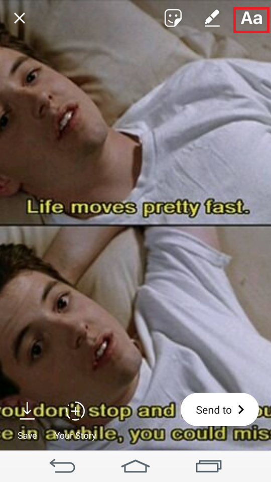

{% extends 'base.html'%}

{% block estilos %}
<meta name="theme color" content="#C991D8">
<link rel="stylesheet" type="text/css" media="screen" href="../static/css/feed.css" />
<link rel="stylesheet" href="{{ url_for('static', filename='css/perfil.css') }}">

{% endblock %}
<!-- <title> username V (@username)| Fotos y videos de Cairina Moschata </title> -->

{% block scripts %}
<script src="https://kit.fontawesome.com/25598d9e09.js" crossorigin="anonymous"></script>
<script src="js/profile.js"> </script>  
<script src="../static/js/buscador.js"> </script>

{% endblock %}
    

{% block contenido %} 
    
<br>
<br>
<br>
<br>

<div>
    <h4 id=mapa> 
    <a href="/feed/">Inicio </a>
    <a href="/user_profile/">Perfil  </a>
    </h4>
    
    <table>
        <thead>
            <tr>
                <td>00</td>
                <td>00</td>
                <td>00</td>
            </tr>
        </thead>
        <td> Publicaciones </td>
        <td>  Seguidores  </td>
        <td>  Seguidos  </td>
    </table>
</div>

<div class="h2opciones"> 
    <div class="hlargo">
        <h3><a href="/user_profile/" class="user_photo" > <i id= us class="fas fa-user-circle"></i> </a> Nombre de usuario 
            <p style="position: img/down; text-align: down; font-size: medium; font-weight: bold"> Nombre Completo </p> </h3> </div>
    <div class="textoPerfil">
           <p>Aquí se visualiza tu biografía</p>
    </div>
    <hr id="lineal">
</div>
<a href="/user_profile/"> <button id=btnEditText type="submit"> Edita tu perfil</button></a>
<br>
<br>
<a href="{{url_for('main.resultados')}}"><i class="fas fa-search"></i> luisa</a>
<a href="{{url_for('main.resultados')}}"><i class="fas fa-search"></i> marco</a>
<div class="imagenes">     



</div>

 
 {% endblock %}
